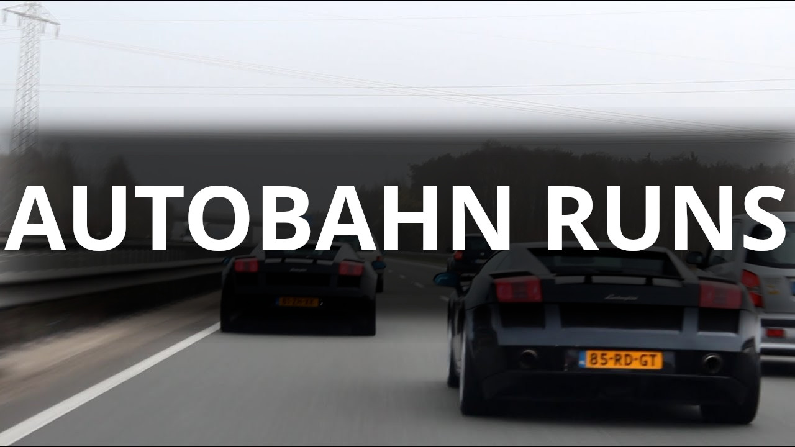
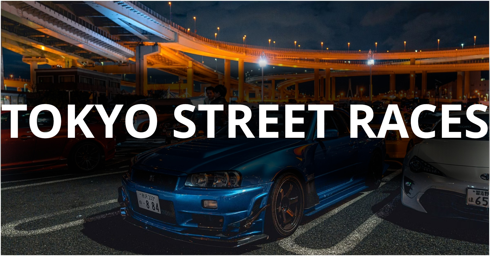
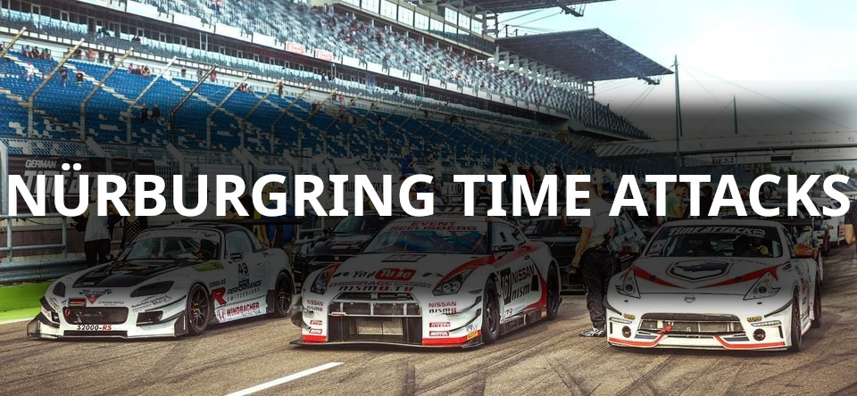
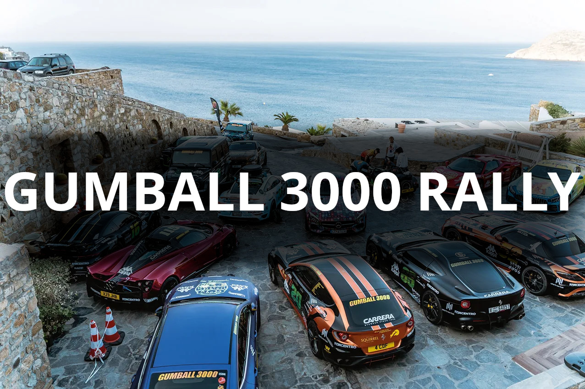
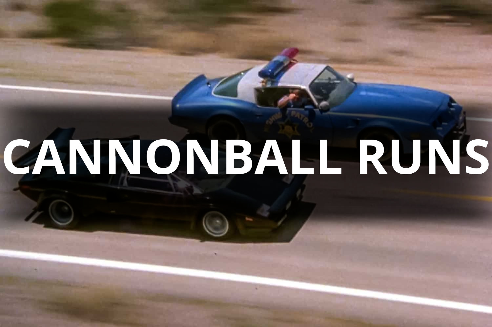
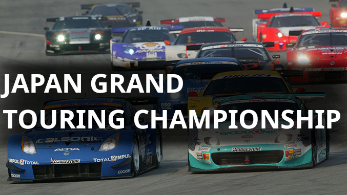
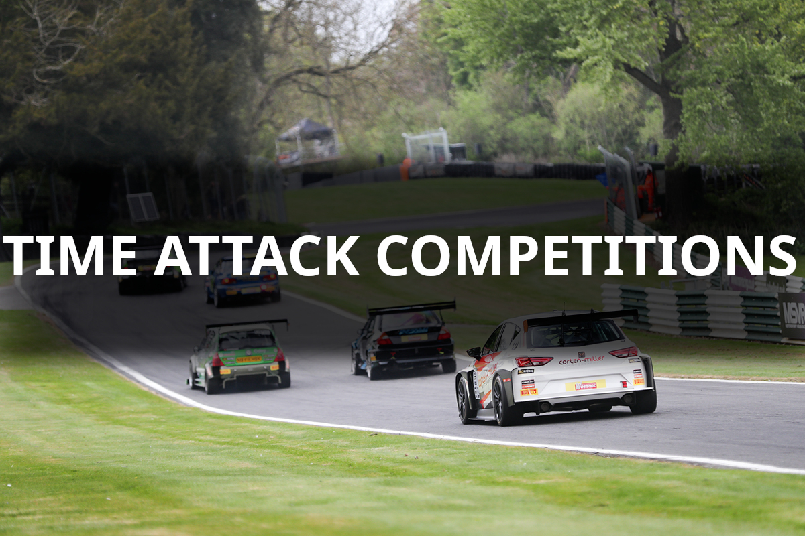

|  |
 |
 |
 |
 |
 |
 |
RUTAS DE VELOCIDAD: EL LEGADO COMPETITIVO DE SMOKEY
- Autobahn Runs
-
Desafíos de velocidad que tienen lugar en las Autobahn alemanas, conocidas por sus tramos sin
límite de velocidad en ciertas secciones. Los participantes buscan alncazar velocidades extremadamente
altas en estas carreteras de alta velocidad, demostrando la capacidad de sus vehículos y su habilidad
como conductores.
- Tokyo Street Races
-
Carreras clandestinas en las calles de Tokyo y otras ciudades de Japón. Estas competiciones
ilegales a menudo involucran a conductores y equipos modificando sus coches para mejorar el
rendimiento y velocidad en un entorno urbano.
- Nürburgring Time Attacks
-
Eventos donde los participantes intentan establecer los tiempos de vuelta más rápidos en el
famoso circuito de Nürburgring Nordschleife, uno de los circuitos más desafiantes y prestigiosos
del mundo. Estas competiciones atraen a conductores de alto rendimiento y equipos de automovilismo
que buscan demostrar la velocidad y el rendimiento de sus vehículos.
- Gumball 3000 Rally
-
Rally internacional que recorre múltiples ciudades y países en un trayecto de alta velocidad.
Aunque no es una competición de velocidad en el sentido tradicional, el Gumball 3000 atrae a una
amplia gama de participantes, desde celebridades hasta entusiastas del automovilismo, que recorren
largas distancias en coches exóticos y modificados, combinando espíritu de aventura con la pasión
por los coches de alto rendimiento.
- Cannonball Runs
-
Competiciones de resistencia en carretera que se llevan a cabo en Estados Unidos. Los
participantes intentan cruzar el país de costa a costa en el menor tiempo posible, desafiando
las leyes de velocidad y resistencia en una carrera no autorizada. Estas competiciones son
ilegales y ponen a prueba tanto la resistencia de los conductores como la capacidad de sus
vehículos para viajes de larga distancia a alta velocidad.
- Japan Grand Touring Championship (JGTC)
-
Competición legal de resistencia en Japón. Esta serie de carreras presenta una variedad de
vehículos de alto rendimiento compitiendo en eventos de larga duración en algunos de los circuitos
más desafiantes de Japón. Los equipos compiten por la victoria en diversas categorías, demostrando
habilidades de conducción, estrategia de equipo y rendimiento de vehículos.
- Time Attack Competitions
-
Competiciones en las que los participantes buscan establecer los tiempos de vuelta más rápidos
en circuitos de carreras. A diferencia de las carreras tradicionales, donde los competidores compiten
entre sí directamente, en las competiciones de Time Attack los participantes tienen la pista para
ellos solos y buscan optimizar su tiempo de vuelta utilizando técnicas de conducción y ajustes en el
vehículo. Estas competiciones son una prueba de la habilidad del conductor y la capacidad de ajuste
del vehículo para lograr el mejor tiempo posible en una vuelta cronometrada.